77 - Ejecución del SQL Server Management Studio |
Desde el menú de inicio de Windows podemos acceder al SQL Server Management Studio:
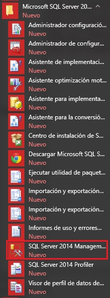Cuando iniciamos el programa aparece un diálogo donde debemos ingresar "Nombre del Servidor" y la "Autenticación":
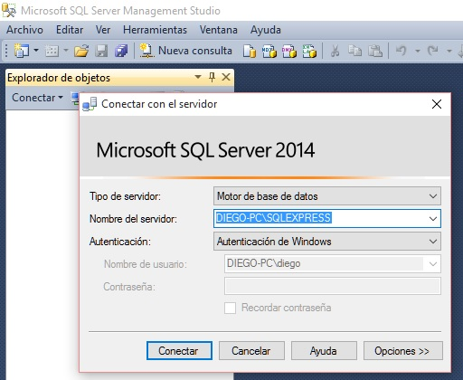Ya luego de la conexión al servidor podemos por ejemplo proceder a crear nuestra primer base de datos, presionamos el botón derecho del mouse estando posicionado en "Base de datos" y elegimos "Nueva base de datos...":
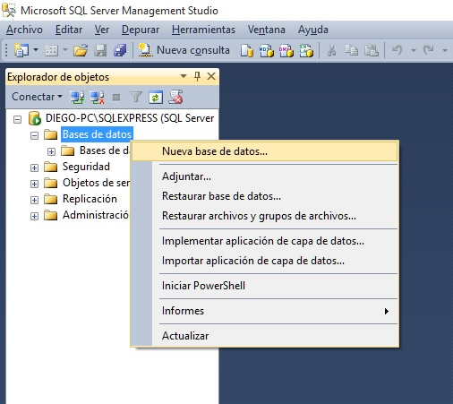Elegiremos como nombre para la base de datos a crear: "base1":
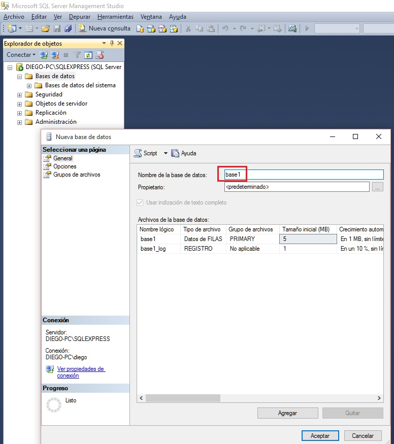Ahora seleccionamos la "base1" y presionamos el botón derecho del mouse sobre "tablas" y elegimos la primer opción "tabla":
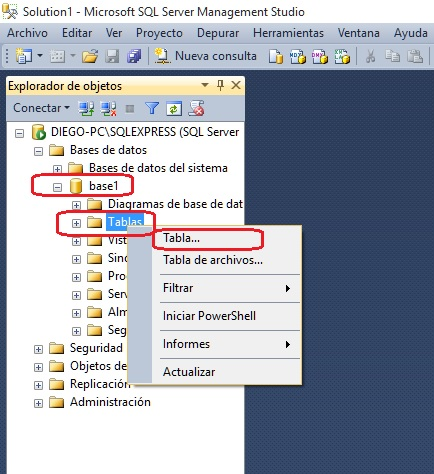Vamos a crear una tabla llamada "articulos" que la definiremos con tres campos:
codigo int primary key identidad descripcion varchar 50 precio float
El primer campo lo creamos:
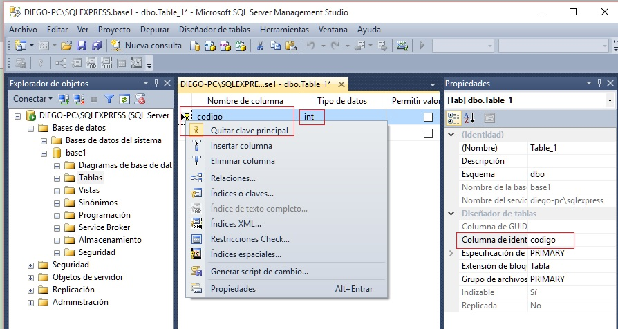Los tres campos que definimos son:
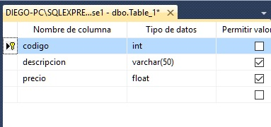Y presionando el ícono siguiente definimos el nombre de la tabla:
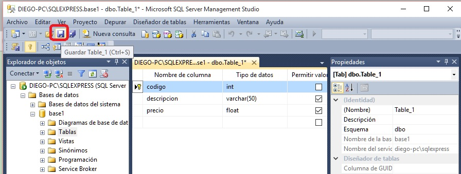Asignamos como nombre a la tabla "articulos":
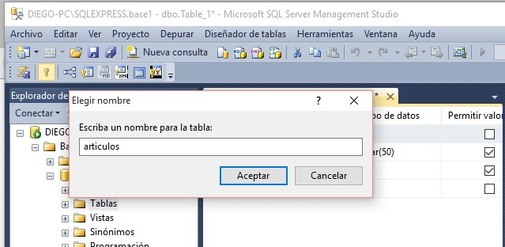Para ejecutar comando SQL sobre una determinada base de datos procedemos a posicionar la flecha del mouse sobre una base de datos, por ejemplo "base1" y presionamos el botón derecho del mouse seleccionando "Nueva consulta":
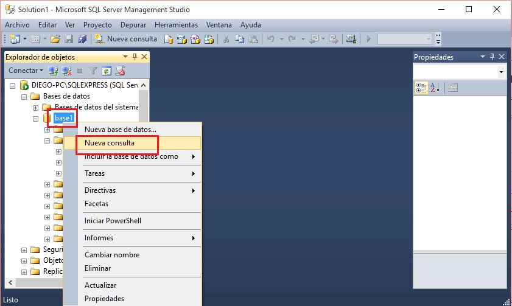En la ventana de consultas podemos escribir y ejecutar comandos SQL:
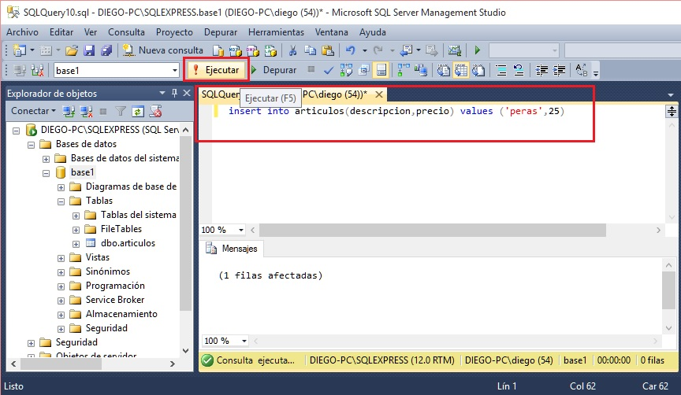Si escribimos luego del comando insert un select podemos ver el registro añadido:
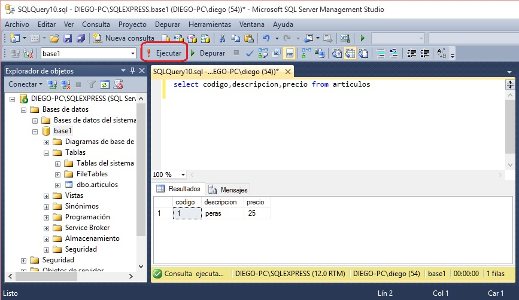